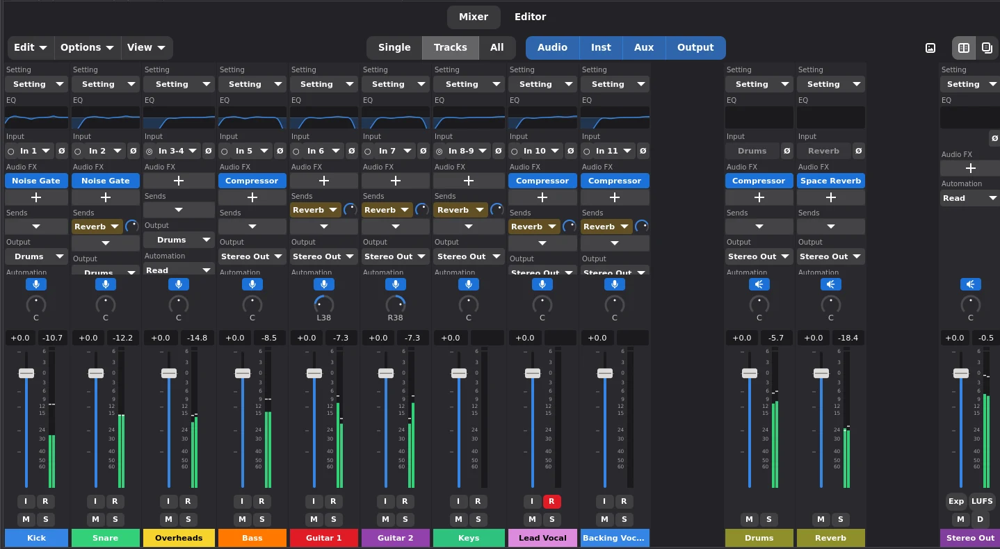

Record, mix and master on Linux.
Solstice is a digital audio workstation for GNOME, made for recording bands — guitars, bass and drums — and finishing the mix yourself.
Free and open source under the GPL. For Fedora and Debian 12, with JACK and PipeWire.

Recording
Built for the band in the room
- Cycle recording into take folders, with swipe comping to build the best pass.
- Autopunch, count-in and pre-roll, and Capture as Recording for MIDI you played before you pressed record.
- Input monitoring within a single audio period, and recording delay compensation measured with a loopback cable.
- A tuner on the selected track's input that reaches down to 40 Hz, for drop-tuned and extended-range guitars and four-string bass.

Guitar and bass
Amps and cabinets on the channel strip
Set a track to a Guitar DI or Bass DI strip and its inserts lay out as Pedals, Amp, Cabinet and Effects, the order a signal runs through a rig.
- Neural Amp Modeler, with a starter library of amp and pedal captures.
- An impulse response loader for cabinets and rooms.
- Overdrive, Saturation and Noise Gate built in, with factory presets.
- Hardware outputs for re-amping, left out of bounces and exports.

Mixing and mastering
Mix it, then check it against the master you're aiming for
Aux buses with pre-fader, post-fader and post-pan sends, VCA faders, side-chain keying, polarity invert and plug-in delay compensation, with track processing spread over real-time worker threads. Cue mixes on hardware outputs start from the main mix.

Mastering
The Loudness window measures momentary, short-term and integrated loudness, loudness range, true peak, correlation and spectrum against a target such as streaming's −14 LUFS. Reference tracks play level-matched, so you can compare your master with a finished one fairly.

Plug-ins
Your plug-ins, and a full set of its own
Solstice hosts VST3, CLAP and LV2 effects and instruments, and Windows VST3s through yabridge. VST3 and CLAP modules are scanned in a separate process, so a plug-in that crashes cannot take Solstice down with it.
Effects
Channel EQ, Compressor, Limiter, Noise Gate, Saturation, Overdrive, De-esser, Stereo Delay, Reverb, Neural Amp Modeler, Impulse Response
Instruments
Solstice Synth, Sampler, and Drum Kit with its own synthesised kit and step patterns in over a dozen styles
MIDI FX
Arpeggiator, Chord Trigger, Note Repeater, Scale Quantize, Transposer, Velocity Processor
Moving over
Bring your sessions with you
Import Final Cut Pro XML, MIDI files and project bundles, with tempo maps, signature changes, markers and key. A project bundle imports in one step, from the exports or exported track audio saved beside it, or with its recordings placed where they were recorded.
Install
Get Solstice
Download the package for your system from the latest release, then install it from the folder you saved it to. Solstice runs its audio through JACK, which PipeWire provides on both.
Debian 12
Download the .debsudo apt install ./solstice-debian12_amd64.debDebian 12's GTK is too old for Solstice, so this package carries its own GTK and libadwaita in /opt/solstice, used by Solstice alone.
Every release, with its notes, is on the releases page. To build from source, see the README.